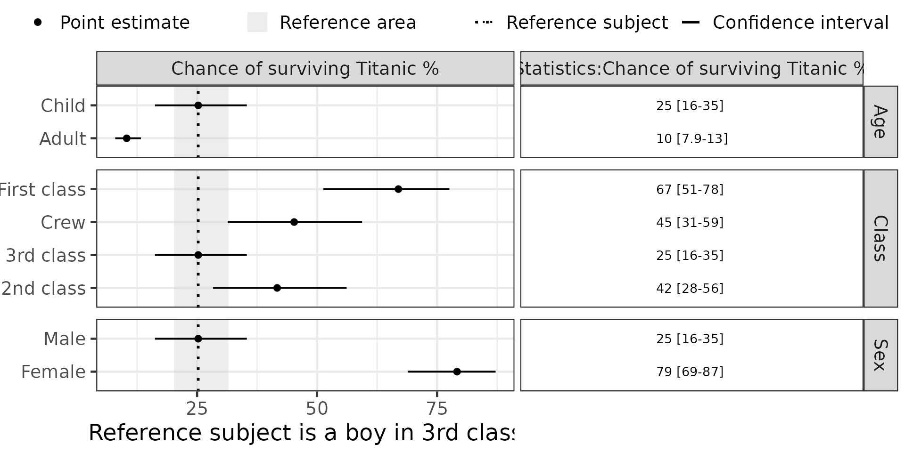

Creating Forest plots for R coded logistic regression models
Creating_Forest_plots_for_R_coded_glm_models.Rmd
packageName <- "PMXForest"
suppressPackageStartupMessages(library(packageName,character.only = TRUE))
library(tools)
library(ggplot2)
library(stats)
library(boot)
theme_set(theme_bw(base_size=18))
theme_update(plot.title = element_text(hjust = 0.5))
set.seed(865765)Introduction
This vignette goes through the steps of manually creating a forest plot. In this example, the forest plot will be based on a logistic regression model implemented in R and the uncertainty will come from a bootstrap in R using the boot package. The logistic model will use the build in Titanic dataset:
The dataset
library(datasets)
# Create useable (long format) data set Titanic from frequency
dfT<-as.data.frame(Titanic)
#Convert frequencies to individual observations
dfData<-data.frame()
for (i in 1:nrow(dfT)) {
if (dfT$Freq[i]!=0) dfData<-rbind(dfData,data.frame(Class=as.character(dfT$Class[i]),
Sex=as.character(dfT$Sex[i]),
Age=as.character(dfT$Age[i]),
Survived=as.character(dfT$Survived[i]),
stringsAsFactors = T)[rep(1,dfT$Freq[i]),])
}Creating parametric Forest plots from R defined models
Overall, there are three sets of required specifications needed:
- The covariate values of interest needs to be specified (Section @ref(sec:dfCovs)).
- The model for the primary and/or secondary parameters need to be implemented in R functions (Section @ref(sec:paramFunction)).
- The multivariate distribution of the primary parameters needs to be derived (Section @ref(sec:multivariateDist)).
With these specifications the data for the Forest plot can be setup (see Section @ref(sec:setUpDataPar)) and the Forest plot created (see Section @ref(sec:createForest)).
Define a fit and prediction function for a general linearized model (GLM) using a logistic regression model
#A GLM fit function for log regresssion
glmfitfunc <- function(fitdata,indicies,strDV,strCovs,strInteraction = "") {
dt<-fitdata[indicies,]
glmfit<-glm(formula = paste0(strDV," ~ ",paste(strCovs,collapse = "+"),strInteraction),
family = binomial(link = "logit"),
data = dt)
return(glmfit)
}
#A GLM pred function
glmpredfunc <- function(glmfit,preddata) {
#Predict probability of survived
return(predict(glmfit,newdata=preddata,type="response"))
}
#A GLM fit & pred function
glmfitpredfunc <- function(fitdata,indicies,strDV,strCovs,strInteraction = "",preddata=NULL) {
if (is.null(preddata)) preddata<-fitdata[indicies,]
return(glmpredfunc(glmfitfunc(fitdata,indicies,strDV,
strCovs,strInteraction),
preddata))
}
#Fit this dataset
#glmfitfunc(dfData,1:nrow(dfData),strDV = "Survived",strCovs = c("Class","Age","Sex"),strInteraction = "")
#Predict probabilities for this dataset
#glmfitpredfunc(dfData,1:nrow(dfData),strDV = "Survived",strCovs = c("Class","Age","Sex"),strInteraction = "")Define the covariates to include in the Forest plot
This specification has one required and two optional components.
The required specification is the list of covariate values to predict the parameter for. It is created using a helper function (createInputForestData). Note that missing is this case is the most common category (the ref category which is -99) and this is manually set to the reference for each category.
dfCovs <- createInputForestData(
list( "Class" = c("1st","2nd","3rd","Crew"),
"Sex" = c("Male","Female"),
"Age" = c("Child","Adult")),
iMiss=-99)
dfCovs$Age[dfCovs$Age==-99]<-"Child"
dfCovs$Sex[dfCovs$Sex==-99]<-"Male"
dfCovs$Class[dfCovs$Class==-99]<-"3rd"The data.frame dfCovs specifies the covariate values, or combination of values to visualize in the Forest plot. Each line if dfCovs correspond to one “row” in the Forest plot.
#> Class Sex Age COVARIATEGROUPS
#> 1 1st Male Child Class
#> 2 2nd Male Child Class
#> 3 3rd Male Child Class
#> 4 Crew Male Child Class
#> 5 3rd Male Child Sex
#> 6 3rd Female Child Sex
#> 7 3rd Male Child Age
#> 8 3rd Male Adult AgeThe structure of the dfCovs list determines how the covariate values are grouped on the y-axis. For example, the structure above would group Class 1st, 2nd, 3rd and crew and, Sex Male/Female, and Age Child/Adult and the groups will be slightly separated from each other in the plot.
covnames <- c("First class","2nd class","3rd class","Crew","Male","Female","Child","Adult")The reference subject will be a boy in 3rd class.
dfRefRow <- data.frame("Age"="3rd","Sex"="Male","Class"="Child")Create the Forest plot data
The actual data to be plotted is assembled manually in this vignette. Below is the call to calculate the forest plot data using the samples from the bootstrap using the boot package. This approach obtain the confidence interval limits non-parametrically from a (n=500) bootstrap.
#Do a bootstrap based prediction of the covariate effect in dfCovs
BoostrapPreds <- boot(dfData,R=500,statistic=glmfitpredfunc,
strDV="Survived",strCovs=c("Age","Sex","Class"),strInteraction="",preddata=dfCovs)
#Do predictions using the original fit
orgpred<-glmfitpredfunc(dfData,1:nrow(dfData),strDV = "Survived",strCovs = c("Class","Age","Sex"),strInteraction = "")
dfres<-dfCovs
dfres$COVNAME<-covnames
iGroups<-c(1,1,1,1,5,5,7,7) #Make the grouping of the covariates
dfres$GROUP<-iGroups
dfres$COVNUM<-1:nrow(dfres)
#Set the medianreference (i.e. 3rd combination of dfCovs: Child, Male, 3rd Class)
dfres$REFFUNC=100*median(BoostrapPreds$t[,3])
#Set the orginal data median reference
dfres$REFTRUE<-100*median(orgpred)
for (i in 1:nrow(dfres)) {
#Get 95% CI and median
q<-quantile(BoostrapPreds$t[,i],probs=c(0.025,0.5,0.975),names=FALSE)
dfres$Q1[i]<-100*q[1] #Lower CI
dfres$POINT[i]<-100*q[2] #Median
dfres$Q2[i]<-100*q[3] #Upper CI
}
dfres$GROUPNAME<-dfres$COVARIATEGROUPS
dfres$PARAMETER="Chance of surviving Titanic %"
dfres$COVEFF=FCreate the Forest plot
Forest plot over survival
The Forest plots below displays the data on an absolute scale which is probabilities of survival. The reference line represent the median survival in the observed data. The model is centered around the most common combination of covariates, i.e. a boy in 3rd class.
forestPlot(dfres,plotRelative = F,referenceInfo=NULL,xlb = "Reference subject is a boy in 3rd class",errbartabwidth = c(1,1))